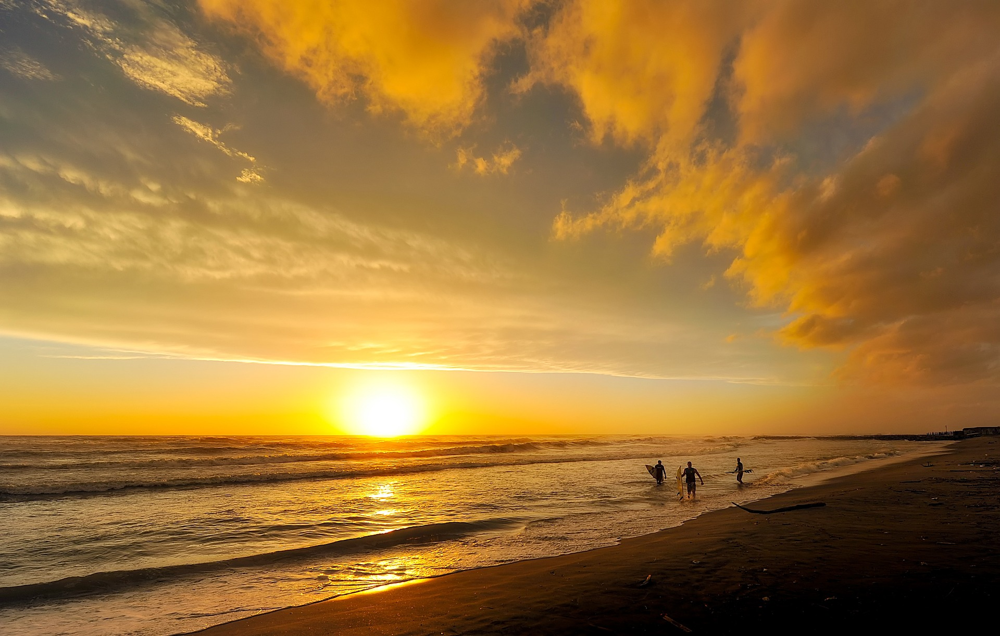
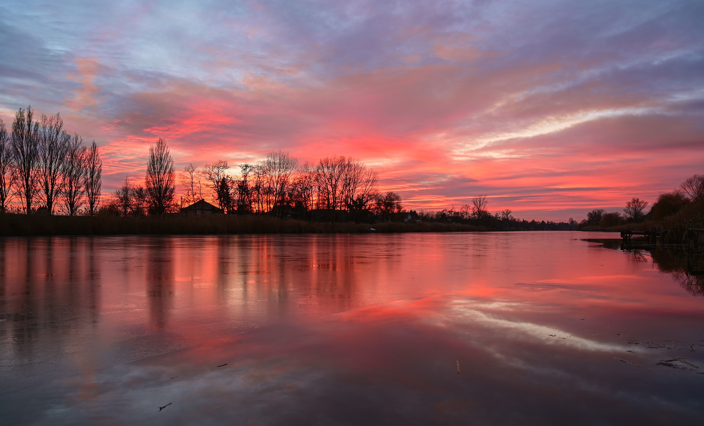
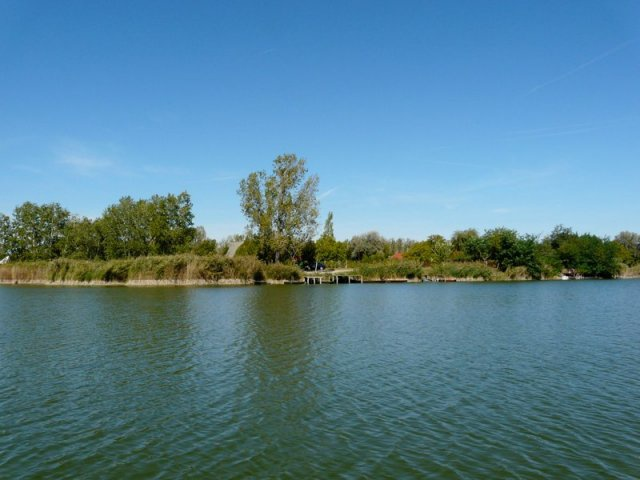

Balaton
A Balaton Magyarország egyik legismertebb és legnépszerűbb turisztikai célpontja. A tó az ország legnagyobb édesvízi tava, amely a Dunántúli-középhegységben található. A tópartot az évszázadok során rengeteg ember kedvelte, és még ma is számos látogatót vonz, akik szeretnék élvezni a tó és környéke kínálta lehetőségeket. A Balaton partvidéke változatos, számos érdekes látnivalót és kikapcsolódási lehetőséget kínál. A tó körül rengeteg strand és fürdőhely található, amelyek között mindenki megtalálhatja a kedvére valót. A tó vizének hőmérséklete a nyári hónapokban kellemes, ideális a fürdőzésre és a vízi sportokra. A Balaton környékén rengeteg természeti és kulturális érték található. A tó déli partján található Siófok a fiatalok körében is nagyon népszerű, míg a nyugati medencében a Badacsony-hegység szőlőtermő vidékeire érdemes ellátogatni. A tó középső részén található a Tihanyi-félsziget, ahol többek között a bencés apátság és a levendulaültetvények csodálhatók meg. A Balaton partján rengeteg lehetőség kínálkozik a kerékpáros és gyalogtúrázóknak is. A parton húzódó kerékpárutak és túraösvények mindig izgalmas és változatos látnivalókat rejtenek. Az aktív pihenés szerelmesei számára a tó vize is rengeteg lehetőséget kínál, mint például a vitorlázás, a kajakozás, a szörfözés vagy akár a horgászat. A Balatonon számos kikötő található, ahonnan akár hajókirándulásokat is szerveznek a környékbeli látnivalókhoz. A környéken sok érdekes program, rendezvény és fesztivál is várja az idelátogatókat, például a balatonfüredi Anna-bál vagy a siófoki Balaton Sound. A Balaton történelme is gazdag, a tópart tele van kulturális örökségekkel. Az egykori Balaton-kultúra népe már az őskorban is élt a környéken, majd az idők során a tó partján számos kastély, kúria és műemlék épült.
Tisza-tó

A Tisza-tó egy mesterséges tó, amelyet a Tisza folyó vízének feltartása és szabályozása révén hoztak létre a századfordulón. A tó területe 127 km², amelyből 77 km² vízfelület. A tó partjának hossza mintegy 160 km. A Tisza-tó gazdag élővilággal rendelkezik, több mint 200 madárfaj fészkel itt és rengeteg hal él a tóban. A tó környékén található a Tisza-tavi Ökocentrum, ahol interaktív kiállításokon és tanösvényeken keresztül ismerhetjük meg a tó élővilágát és környezetét. A tó partján számos fürdőhely és strand található, amelyek nyáron több tízezer embert vonzanak. A strandokon lehetőség van különböző vízi sportokra is, mint például vitorlázás, kajakozás, wakeboardozás és horgászat. A tó környéke azoknak is vonzó lehet, akik a kerékpározást kedvelik, hiszen a Tisza-tavat körülvevő kerékpárutak összesen mintegy 150 km hosszúak. A tó egyik érdekessége, hogy körülötte találhatók a világ egyik legnagyobb, fából épült játszóterei, a Tisza-tavi Ökoplayák. Ezek az egyedi játékok kiváló lehetőséget nyújtanak a gyermekeknek a szabadtéri játékra és kalandokra. A Tisza-tó környékén számos túraútvonal is található, ahol a természet közelségében lehet kirándulni és túrázni. A legnépszerűbb túraútvonalak a Tisza-tavi Tanösvény és a Tisza-tavi Ökotúra. A tó környékén számos kulturális és történelmi látnivaló is található. Például a tó közvetlen közelében fekszik a Tiszafüreden található Tisza-tavi Halászati Múzeum, amely a tó horgászati hagyományait mutatja be. A Tisza-tó télen is vonzó, hiszen a fagyos időjárás lehetővé teszi a jégkorcsolyázást és a horgászatot is. A tó környéke télen is gyönyörű látványt nyújt, és lehetőséget ad a szánkózásra és a sítúrázásra is. A Tisza-tó környékén számos gasztronómiai specialitás található.Szelidi-tó

A Szelidi-tó a Balaton-felvidéki Nemzeti Park területén található, Szepetnektől kb. 12 km-re északra. A tó körülbelül 34 hektáros területen terül el, és a Keszthelyi-hegység lankáinak találkozásánál helyezkedik el. A Szelidi-tó türkizkék vizű és rendkívül tiszta, ami miatt különösen népszerű a fürdőzők körében. A parton található homokos és füves területek ideálisak a napozásra és a pihenésre. A tóban lehet horgászni és csónakázni is. A Szelidi-tó körül több túraútvonal is található, amelyek a Keszthelyi-hegység és a Balaton-felvidéki Nemzeti Park szépségeit mutatják be. Az egyik legnépszerűbb túraútvonal a Szent Mihály-hegyre vezet, ahonnan gyönyörű panoráma nyílik a környékre. A tó partján található a Szelidi-tó Kemping, amely kényelmes szállást biztosít az idelátogatóknak. A kempingben lehetőség van sátorozásra, lakókocsi bérlésre és apartmanokban történő szállásfoglalásra is. A környéken több látnivaló is található, például a Szent Vid-hegyi Kilátó, a Festetics-kilátó és a Csodabogyós-barlang. A környéken gazdag kulturális és történelmi örökség is található, például a Festetics-kastély és a Kis-Balaton védett területe. A Szelidi-tó télen is különleges élményt nyújt, amikor a tó partján sípálya és szánkópálya üzemel. A téli sportok kedvelői élvezhetik a síelést és a snowboardozást. A tó környéke a madármegfigyelők paradicsoma, mivel itt található a Balaton-felvidéki Nemzeti Park madárrezervátuma, ahol több mint 200 faj él. A Szelidi-tó környékén található éttermek és vendéglők kiváló helyek az ízletes helyi ételek kóstolására. A környéken termesztett gyümölcsök, zöldségek és borok kiváló minőségűek. A Szelidi-tó és környéke a természet szerelmeseinek és az aktív kikapcsolódást keresőknek kiváló úti cél. A tó kristálytiszta vize, a lenyűgöző